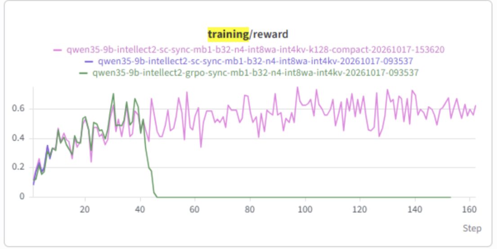

Score Centering¶
| GPU | Model | Controller Mode | Trainer Mode | Code |
|---|---|---|---|---|
| 1× B200 | Qwen/Qwen3.5-9B |
Local | Sync only | Source |
This Score Centering example trains a single-turn math reasoning agent on PrimeIntellect/INTELLECT-2-only-math with verl and Agent Lightning >=v1.0. It provides GRPO and score centering (SC) presets using INT8 weight/activation inference, an INT4 Attention KV cache, and BF16 training.
Each rollout generates reasoning and a boxed final answer through the Chat Completions API. math_verify assigns reward 1 for an equivalent answer and 0 otherwise; truncated completions receive 0.
Results¶

The pink curve uses Score Centering; the green curve is the GRPO baseline without Score Centering. In these runs, the Score Centering training reward remains around 0.6 at later steps, while the baseline reward drops to zero around step 45 and stays there.
Setup¶
Run the commands below from the repository root. Start with the installation guide to set up .venv and VERL 0.8.0. This example uses vLLM 0.25.0, Torch 2.11.0, and Transformers 5.16.1 on B200, which differ from the general installation guide's pinned inference stack:
source .venv/bin/activate
uv pip install --python .venv/bin/python \
-r examples/intellect2_math/precision/requirements-training.txt \
-r examples/intellect2_math/requirements.txt
Install or rebuild FlashAttention against the resulting Torch/CUDA environment before training. Model preparation uses a separate quantization environment, as shown below.
Data Preparation¶
Download and prepare the dataset:
The script uses dataset revision 169e067d356aaca3cd8e860c7b900283df02f53d, removes missing answers, and creates disjoint train/validation splits with seed 42 and 500 validation problems. It writes:
examples/intellect2_math/data/train.parquetexamples/intellect2_math/data/test.parquet
To change the validation size, seed, or output directory:
.venv/bin/python -m examples.intellect2_math.prepare_data \
--val-size 500 --seed 42 --output-dir /path/to/data
Low-Precision Preparation¶
Training uses BF16 computation with FP32 master parameters. Rollout generation and periodic validation both use INT8 linear weights, dynamic per-token INT8 input activations, and INT4 per-token/head Attention KV cache. Embedding and LM head remain BF16. Gated DeltaNet recurrent states are separate from the Attention KV cache. After each training update, the INT8 rollout adapter requantizes the updated linear weights before synchronizing them to vLLM.
The shared config.yaml enables low-precision inference for both runs:
actor_rollout_ref:
rollout:
dtype: bfloat16
quantization: int8
quantization_config_file: ${oc.env:SC_INT8_CONFIG,outputs/precision_validation/Qwen3.5-9B-W8A8-INT8/config.json}
engine_kwargs:
vllm:
linear_backend: triton
attention_backend: TRITON_ATTN
kv_cache_dtype: int4_per_token_head
dtype: bfloat16 is the surrounding compute dtype; the explicit quantization and cache settings select INT8 W/A and INT4 Attention KV. No training offload is enabled.
Prepare a W8A8 model in a separate quantization environment. This records the INT8 weight and activation scheme used by the rollout adapter; INT4 KV is selected at inference time and is not part of the saved weight quantization. Select a free GPU for model preparation:
uv venv .venv-quantize --python 3.12
uv pip install --python .venv-quantize/bin/python \
-r examples/intellect2_math/precision/requirements-quantize.txt
CUDA_VISIBLE_DEVICES=0 .venv-quantize/bin/python \
examples/intellect2_math/precision/prepare_int8.py \
--model Qwen/Qwen3.5-9B \
--output outputs/precision_validation/Qwen3.5-9B-W8A8-INT8
Keep SC_MODEL set to Qwen/Qwen3.5-9B (or its unquantized training checkpoint). Set SC_INT8_CONFIG to the prepared model's config.json; the default path matches the command above. The trainer loads the full-precision model and initializes the quantized rollout model using this configuration. The local launcher starts vLLM itself.
Training¶
After preparing the dataset and quantization configuration, run a three-step smoke test:
export SC_MODEL=Qwen/Qwen3.5-9B
export SC_INT8_CONFIG=outputs/precision_validation/Qwen3.5-9B-W8A8-INT8/config.json
SC_GPU=0 bash examples/intellect2_math/run_local.sh --baseline grpo --smoke \
'trainer.logger=[console]'
SC_GPU=0 bash examples/intellect2_math/run_local.sh --baseline sc --smoke \
'trainer.logger=[console]'
Run these commands sequentially on a free GPU. The smoke preset uses 2 prompts × 4 rollouts for three training steps and saves no checkpoints. Both presets have completed this smoke test on B200 with packed Qwen3.5-9B inputs.
Omit --smoke for the configured 200-step training budget:
The default configuration logs to both the console and W&B. Authenticate W&B separately if you omit the console-only override above.
The full presets use 32 prompts × 4 rollouts, learning rate 1e-6, microbatch size 1, and no training offload. Training samples at temperature 1, top-p 1, and without a top-k sampling filter. Validation is greedy every 16 steps, without an initial validation pass. The response limit is 8192 tokens.
--baseline |
Training objective |
|---|---|
grpo |
Clipped GRPO with per-rollout mean loss and lower/upper clip widths 0.2/0.3 |
sc |
Top-K score centering with is_mode=none and K=128 |
sc_mis |
Score centering with masked importance sampling |
sc_tis |
Score centering with truncated importance sampling |
grpo_mis |
Unclipped importance-weighted objective with centering disabled; an ablation of SC |
The documented B200 smoke runs cover grpo and sc. Both use rollout-level advantages with group standard deviation normalization.
Use --train-file and --val-file for custom parquet paths, and trailing key=value arguments to override the preset:
SC_GPU=0 bash examples/intellect2_math/run_local.sh --baseline sc \
--train-file /path/to/data/train.parquet \
--val-file /path/to/data/test.parquet \
trainer.total_training_steps=100 'trainer.logger=[console]'
To inspect the resolved configuration without starting services:
run_local.sh starts agl-server, a local agl-controller, and a local Ray training job. It saves the resolved configuration and server.log, controller.log, and train.log under the printed log directory. On exit, the launcher cleans up its server/controller processes and the trainer shuts down Ray.
| Setting | Default | Description |
|---|---|---|
SC_MODEL |
Qwen/Qwen3.5-9B |
Model or unquantized training checkpoint |
SC_INT8_CONFIG |
outputs/precision_validation/Qwen3.5-9B-W8A8-INT8/config.json |
Prepared INT8 quantization configuration |
SC_GPU |
0 |
GPU selected through CUDA_VISIBLE_DEVICES |
SC_PORT |
8282 |
Local gateway port |
SC_KEY |
sc-local |
Shared gateway key |
SC_LOG_DIR |
/tmp/score-centering-<timestamp>-<pid> |
Configuration and log directory |
SC_UPSTREAM_TIMEOUT_SECONDS |
3600 |
Upstream HTTP timeout for long reasoning outputs |
Score Centering¶
SC follows Section 4 and Appendix A of the paper. Each generated position records the top K behavior probabilities from the same sampling call, plus the actual sampled token logprob independently. K defaults to 128 and is separate from the rollout sampling top_k filter. Candidate probabilities keep their original normalization; their sum may be below one, and the sampled token may be outside the head.
For the SC run, is_mode=none. The trainer scores the current policy over the full model vocabulary at the rollout temperature, then gathers candidate and sampled logprobs. Let P_H=sum_H p_v, Q_H=sum_H q_v, and rho=max(1-Q_H,1e-6)/max(1-P_H,1e-6). The token loss is -sg(A) * [log(p_a) - sum_H sg(q_v-rho*p_v)*log(p_v)], where sg denotes stop-gradient. The unrecorded behavior tail is approximated as proportional to the current policy.
The math recipe uses group standard deviation normalization for both algorithms. SC uses an unclipped objective and global generated-token reduction. Padding is masked. Full-vocabulary rollout probabilities are not stored.
| SC setting | Default | Meaning |
|---|---|---|
agentlightning.score_centering.top_logprobs_num |
128 |
Recorded candidate count K |
agentlightning.score_centering.is_mode |
none |
Importance weighting: none, tis, or mis |
agentlightning.score_centering.tis_max |
2.0 |
Upper bound on the TIS importance weight |
agentlightning.score_centering.mis_min |
0.5 |
Lower bound of the MIS acceptance interval |
agentlightning.score_centering.mis_max |
5.0 |
Upper bound of the MIS acceptance interval |
agentlightning.score_centering.centering |
true |
Enable the score-centering correction; disabled by grpo_mis |
SC_GPU=0 bash examples/intellect2_math/run_local.sh --baseline sc \
agentlightning.score_centering.top_logprobs_num=128 \
agentlightning.score_centering.is_mode=none
The launcher propagates K to the gateway and vLLM max_logprobs. GRPO requests only sampled-token logprobs; SC additionally records the candidate IDs and logprobs needed by the correction.
The SC worker supports packed and padded FSDP inputs without sequence parallelism or fused LM-head kernels. It reuses VERL's FlashAttention/Triton cross-entropy helper for the sampled-token logprob, then recovers candidate logprobs from logit differences. The transport sends candidate IDs and logprobs once, omitting duplicate OpenAI Top-K text objects. For Qwen3.5 packed training, the packing hook passes exact sequence offsets and evaluates gated linear attention separately across sample boundaries.
The gateway groups candidate capture under default_proxy.score_centering.enabled and default_proxy.score_centering.top_logprobs_num. The launcher derives these values from the resolved training configuration, along with the training and validation sampling settings. The grpo preset uses the standard VERL worker and only requests sampled-token logprobs.
Both GRPO and SC report rollout_corr/k3_kl. For each generated token, d = train_logprob - rollout_logprob; K3 is the masked mean of exp(d) - 1 - d. GRPO computes it during old-policy scoring; SC computes it from the training forward pass. This diagnostic uses sampled-token logprobs.